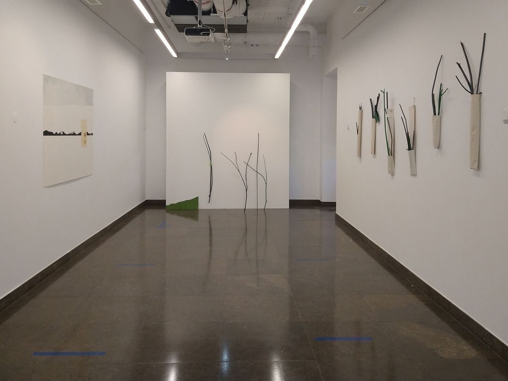
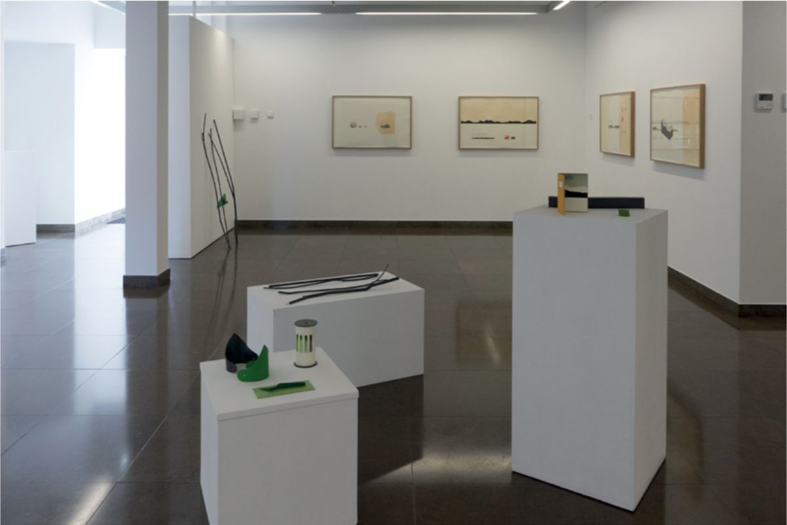
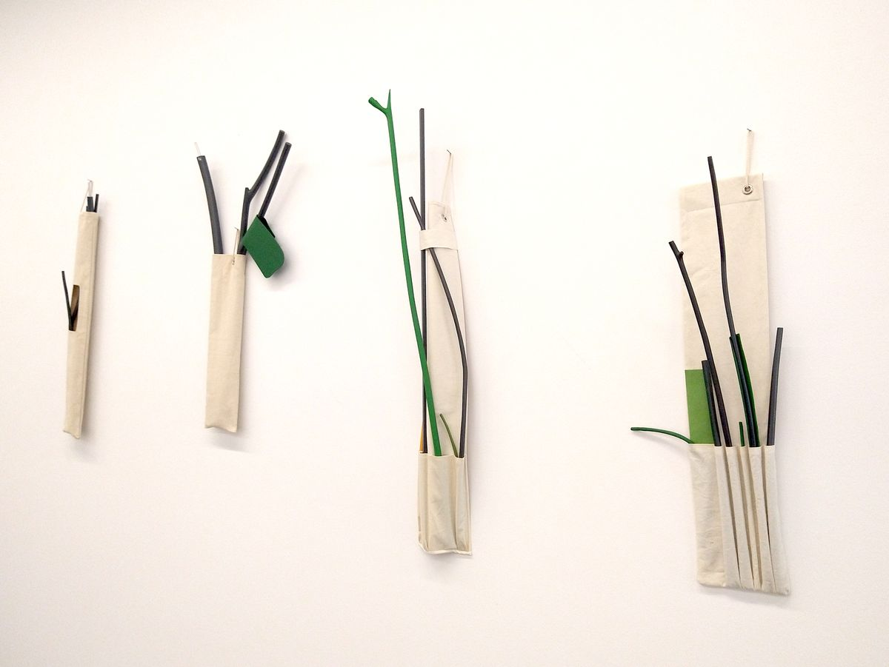
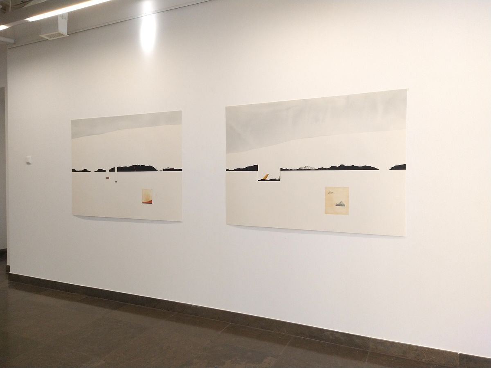
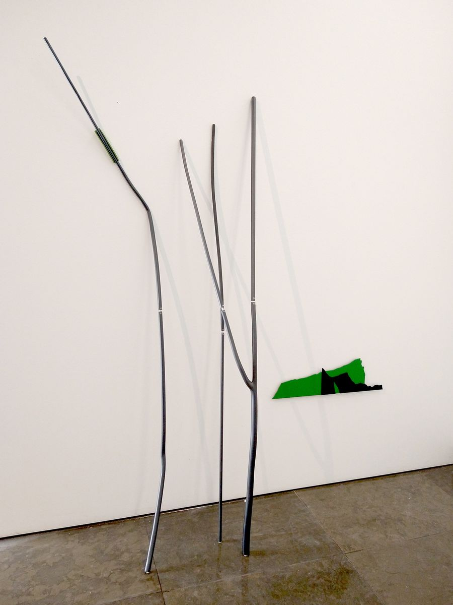
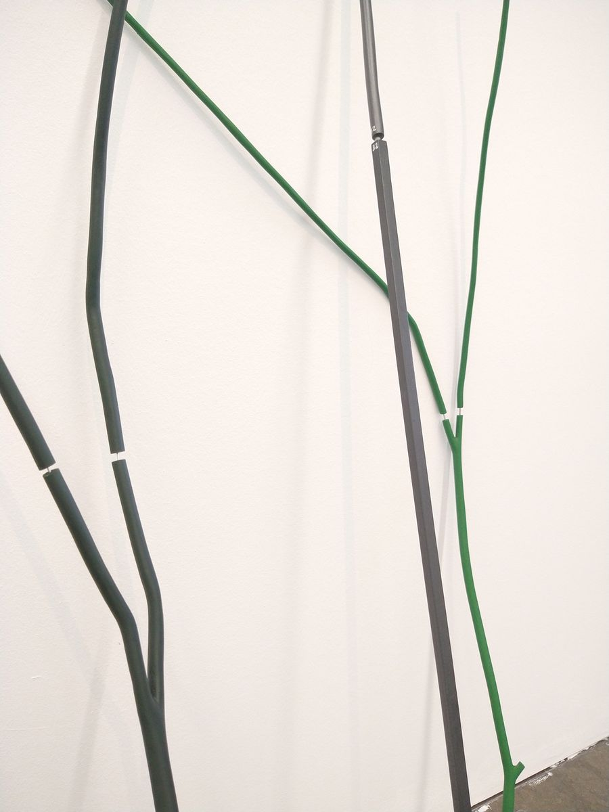

As possibilidades de uma paisagem
Galeria do Parque, Vila Nova da Barquinha, 06.11.2020–30.01.2021. Curadoria de João Pinharanda
Exposição individual na Galeria do Parque, em Vila Nova da Barquinha, com curadoria de João Pinharanda.






Textos
- As possibilidades de uma paisagem / The Possibilities of a Landscape (PDF)João Pinharanda · Galeria do Parque, Vila Nova da Barquinha · 10.2020 · PT-EN
- As possibilidades de uma paisagem (PDF)Galeria do Parque, Vila Nova da Barquinha · 2020 · PT